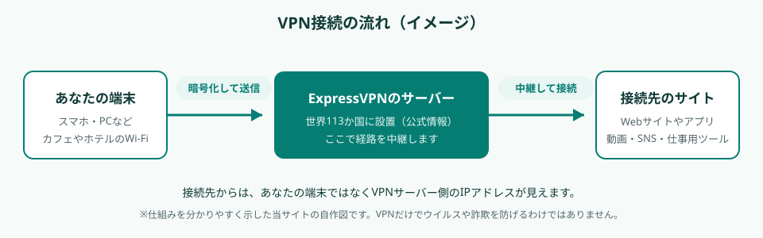
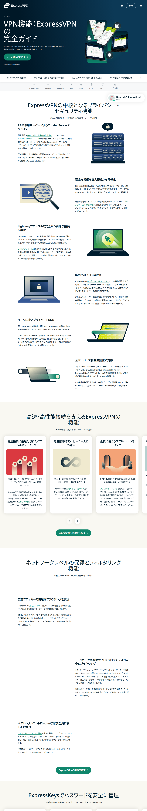
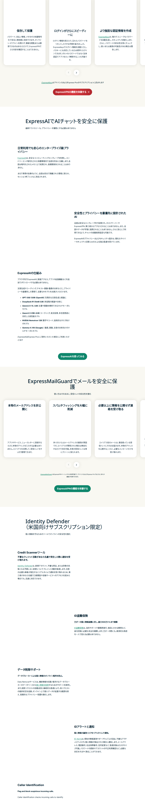

ExpressVPNのブラックフライデー価格はどう確認する？初めてのVPN選びと料金チェックガイド
記事作成日：2026年11月22日／公開：2026年11月30日
ブラックフライデーの時期は、VPN各社のセール表示が目につきます。ただ、大きく表示された「月額○○円」や「○○％オフ」だけでは、実際にいくら払うのかは分かりません。この記事では、ExpressVPNの料金を公式情報で確認する手順と、初めてVPNを選ぶ人が押さえたいポイントを整理します。
セール価格で失敗しないコツは、月額換算ではなく「初回に支払う合計額」と「更新後に請求される額」を公式の決済画面で確認することです。ExpressVPNは新規利用者向けの30日間返金保証がありますが、無料トライアルとは仕組みが違います。条件を確認したうえで申し込みましょう。
セール価格で失敗しないための4つの確認ポイント
1. 「月額換算」は総額を契約月数で割った数字です
長期プランの「月額○○円」は、初回にまとめて支払う総額を月数で割った換算値です。毎月その金額が引き落とされるわけではありません。たとえば28か月プランなら、初回に28か月分を一括で支払います。家計の出費として見るなら、月額換算ではなく初回の支払総額で判断するのが安全です。
2. 初回価格と更新後の価格は別物です
セール価格は初回契約期間だけの割引であることが一般的で、更新時は通常料金に戻ります。「安い」と感じた価格が2年目以降も続くとは限りません。申込み画面では、初回合計とあわせて「更新時の請求額」も必ず確認してください。
3. 表示通貨と税金の扱いを確認しましょう
ExpressVPNの公式料金ページでは、金額が米ドル（USD）で表示される場合があります。2026年11月22日に公式料金ページを確認した時点でも、表示金額はすべてUSDで、該当する場合はチェックアウト時に消費税が適用される旨が注記されていました。日本円での最終金額は、決済画面で表示される額が正解です。検索結果や広告文面の円価格をうのみにしないでください。
4. 割引率は「何から何への割引か」を見ます
「○○％オフ」は、通常の月額料金を基準にした値引きとして表示されることがあります。割引率の大きさよりも、自分が選ぶプランと期間で、初回にいくら払い、更新後にいくらになるかという2つの金額で比べるのが確実です。
公式料金ページで確認できたこと（2026年11月27日確認）
ExpressVPNのプランは、ベーシック／アドバンス／プロの3種類です。同時接続台数はベーシック10台、アドバンス12台、プロ14台で、サーバーは世界113か国に設置されています（公式料金ページの機能比較より）。2026年11月27日に公式料金ページで確認したブラックフライデーセールでは、2年プランに4か月無料が付いて最初の28か月が対象になっており、各プランの価格は次の表のとおりでした。
| ベーシック | 同時接続10台。2年プラン（＋4か月無料、最初の28か月）：月額換算440円（82%オフ）、初回のお支払い合計12,320円（通常69,440円）。更新後は年14,999円。 |
|---|---|
| アドバンス | 同時接続12台。パスワード管理などの付帯サービスを含むプラン。2年プラン（＋4か月無料、最初の28か月）：月額換算640円（76%オフ）、初回のお支払い合計17,920円（通常75,040円）。更新後は年18,999円。 |
| プロ | 同時接続14台。固定IPが含まれる上位プラン。2年プラン（＋4か月無料、最初の28か月）：月額換算1,040円（71%オフ）、初回のお支払い合計29,120円（通常103,040円）。更新後は年28,999円。 |
価格は2026年11月27日時点のブラックフライデーセール価格です。セールは期間限定で、終了後は価格表示が変わります。読者の方も、申込みの直前に必ず公式ページで最新の金額を確認してください。
そもそもVPNは何をするもの？
VPNは、端末からVPNサーバーまでの通信を暗号化された経路でやり取りする仕組みです。カフェやホテル、空港などの公共Wi-Fiを使うときに、通信内容を第三者に読み取られにくくするための選択肢になります。接続先のサイトからは、あなたの端末ではなくVPNサーバー側のIPアドレスが見えます。

一方で、VPNは万能ではありません。ウイルス対策やフィッシング詐欺の防止は別の対策が必要ですし、ログインしたサービスの側ではアカウント情報で利用者が識別されます。「VPNを使えば完全に匿名になる」「あらゆる脅威から守られる」という理解は正確ではありません。あくまで通信経路を保護する道具として選びましょう。
初めてのVPN選び：プランはどう選ぶ？
ExpressVPNの3プランの違いは、同時接続台数と付帯サービスの有無が中心です。VPNとしての基本機能（暗号化通信、世界113か国のサーバー、独自プロトコル「Lightway」、接続が切れた際に通信を遮断するキルスイッチ機能）は共通しています。
- ベーシック：同時接続10台。スマホとPCなど、個人の端末をひと通りカバーできる台数です。VPNだけを使いたい初めての方は、まずこのプランから検討するのが無理のない選び方です。
- アドバンス：同時接続12台に加え、パスワード管理（ExpressKeys）などの付帯サービスが含まれます。家族と共有したい場合や、パスワード管理もまとめたい場合に向きます。
- プロ：同時接続14台で固定IPが含まれる上位プランです。台数が多い家庭や、固定IPが必要な用途がある場合の選択肢です。
迷ったら、使う端末の台数を数えてみてください。同時接続台数は「同時にVPNへつなぐ台数」です。スマホ1台とPC1台だけならベーシックで十分に収まります。長期プランは月額換算が安くなりますが、初回の支払総額は大きくなります。初めての契約では、返金保証の条件を確認したうえで、続けられそうかを見極めてから期間を選ぶのがおすすめです。


30日間返金保証の正確な条件
ExpressVPNには、新規利用者向けの30日間返金保証があります。ただし、これは「30日間無料で試せる」という意味ではありません。いったん支払いを行い、満足できなければ購入から30日以内に申請して全額返金を受ける仕組みです。公式の返金ポリシーで確認できた条件は次のとおりです。
- 対象は初めてExpressVPNを利用する方のみです。過去に返金を受けたことがある方は対象外です。
- 返金の申請は、購入した時点から30日以内に行う必要があります。
- Google PlayやApp Storeのアプリ内購入は、ExpressVPNの30日間返金保証の対象外です。その場合の返金は各ストアの判断になります。保証を使いたい場合は、公式サイトから購入するのが確実です。
- 返金の対象になるかどうかは、購入時に適用されていた規約や、プラン・購入方法・プロモーションによって異なる場合があります。
詳しくは公式の返金ポリシーを確認してください。「合わなければ返金してもらえる」という安心材料にはなりますが、申請の手間はかかるため、最初から条件を理解して申し込むのが前提です。
申込み前のチェックリスト
- 決済画面で、初回のお支払い合計（税込）を確認した
- 更新後の料金と、自動更新のタイミングを確認した
- 使う端末の台数に合うプランを選んだ
- 購入方法が返金保証の対象になるか確認した（公式サイトからの購入が確実）
- VPNでできること・できないことを理解した
- 解約手続きの方法を公式サポートで確認した
料金の確認方法と条件に納得できたら、下記のA8.net経由の広告リンクから公式の申込みページを確認できます。申込みの直前に、決済画面で最新の金額を必ず確認してください。
このリンクはアフィリエイト広告です。クリックや購入だけで必ず報酬が発生するとは限りません。
広告を利用せず内容を確認したい場合は、ExpressVPN公式サイトを開いてください（こちらはアフィリエイト広告ではありません）。
よくある質問
セール価格は更新後も続きますか？
一般に、セール価格は初回契約期間の割引で、更新時は通常料金に戻ります。更新後の金額は申込み画面と公式の案内で確認してください。
返金保証と無料トライアルは同じですか？
違います。返金保証は支払い後に条件を満たして申請し、全額返金を受ける仕組みです。また、アプリストア経由の購入はExpressVPNの返金保証の対象外です。
初めてならどのプランがよいですか？
VPNだけを使いたい場合は、同時接続10台のベーシックが検討の起点になります。家族での共有やパスワード管理などの付帯サービスが必要ならアドバンス以上を比べてください。
参考にした公式情報
- 公式料金・プラン一覧（2026年11月22日に確認し、2026年11月27日に価格を再確認。同時接続台数、サーバー設置国数を確認）
- 返金ポリシー（2026年11月22日に確認。対象者、30日の期限、アプリストア経由購入の扱いを確認）
- キルスイッチの説明
記事作成：2026年11月22日。公開・情報確認：2026年11月30日。この記事は公式公開情報をもとに作成したガイドです。当サイトによる実測速度や長期利用レビューではありません。セール価格は期間終了後に表示が変わるため、申込みの直前に公式サイトで最新の金額をご確認ください。セール終了を確認した時点で、この記事の価格に関する記載は更新します。
← ほかのガイドを見る